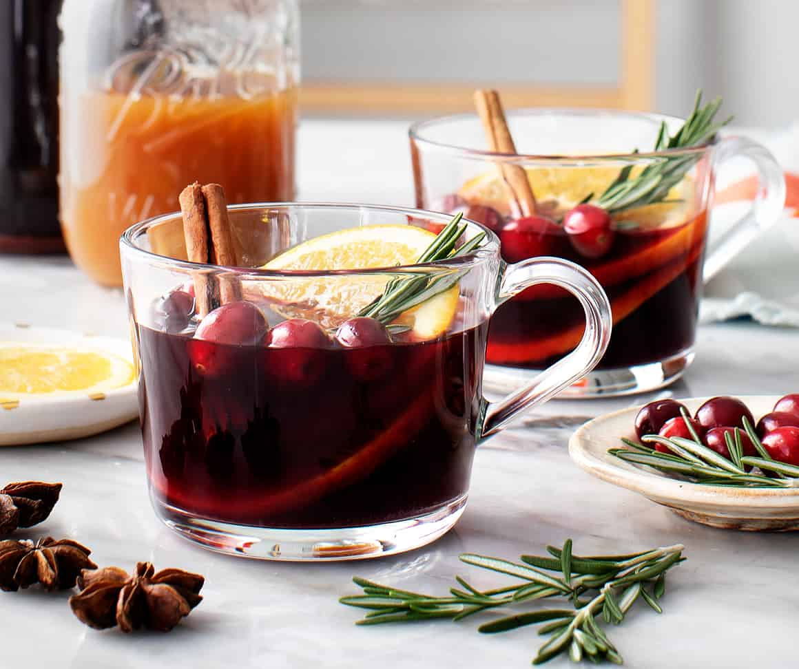

Mulled Wine Recipe

Description
Quaff! Wash down your hearty meals with some mulled wine. Mulled wine is a delicious alternative to your regular red wine. Spices and cinnamon are blended into the wine, and then the wine is heated-up to complete this aromatic and cozy beverage. Great on a cold winter's night.
Ingredients
- 1 small red onion, diced
- 16 ounce small pasta shells
- salt and ground black pepper to taste
- 1 pinch garlic salt
- 1 tablespoon butter
- 1/4 cup brown sugar
- 3 11 ounce cans of condensed cream of cheddar soup
- 2/3 cup shredded Havarti cheese
- 1/4 cup grated Parmesan cheese
- 1 1/2 cups shredded Cheddar cheese
Steps